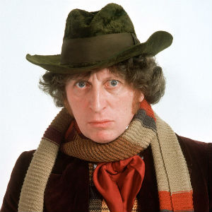

Portrayed by Tom Baker.
|  | Baker was born in Scotland Road, Liverpool, England. His mother, Mary Jane (née Fleming), was a cleaner, and his father, John Stewart Baker was a Jewish[2] English sailor who was rarely at home. His parents were working class Liverpudlians. Baker left school at 15 to become a Roman Catholic monk and remained in this lifestyle for six years, but left after losing his faith.[3] He did his national service in the Royal Army Medical Corps, serving from 1955 until 1957. At the same time, he took up acting, first as a hobby but he turned professional towards the end of the 1960s. |